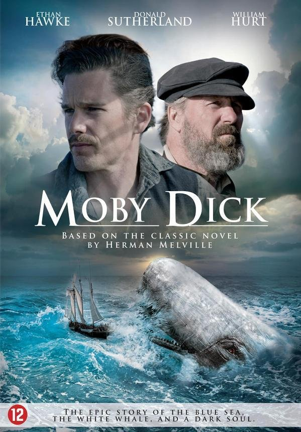
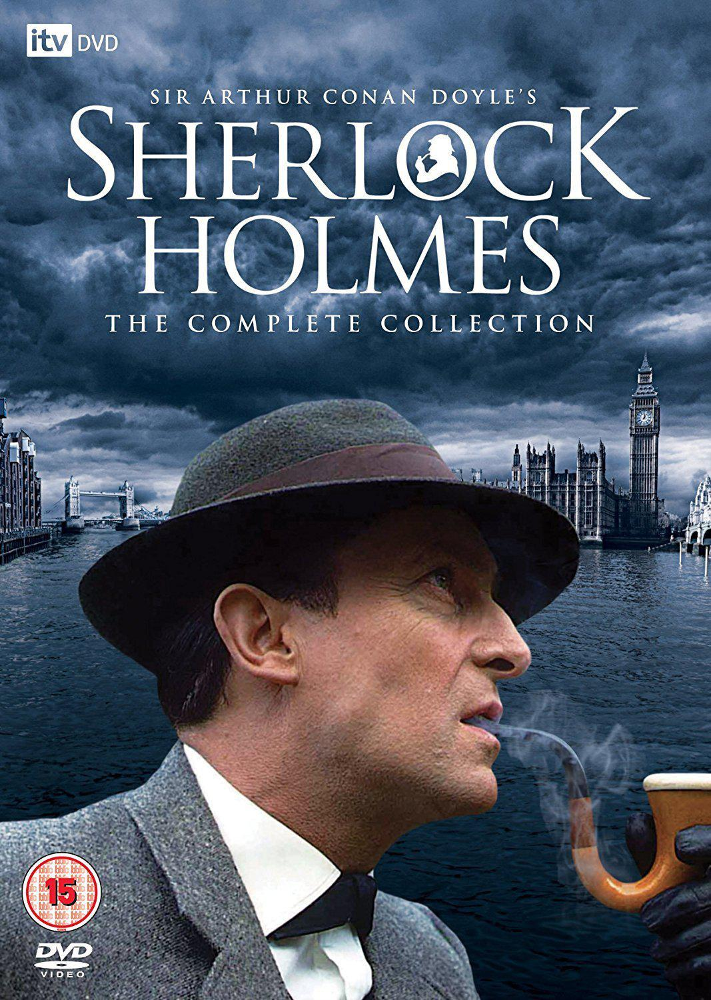

| category | Book | Price |
|---|---|---|
| Action adventure | ||
|
The Witcher | 10.50 |
| The Witcher is a series of six fantasy novels and 15 short stories written by Polish author Andrzej Sapkowski. | ||
|
Dune | 15.00 |
| Paul Atreides, a brilliant and gifted young man born into a great destiny beyond his understanding, must travel to the most dangerous planet in the universe to ensure the future of his family and his people. | ||
| classic | ||
| Animal Farm | 5.99 | |
| Animal Farm is a satirical allegorical novella by George Orwell, first published in England on 17 August 1945. | ||
|  | Moby-Dick | 9.50 |
| The book is the sailor Ishmael's narrative of the obsessive quest of Ahab, captain of the whaling ship Pequod, for revenge on Moby Dick, the giant white sperm whale that on the ship's previous voyage bit off Ahab's leg at the knee. | ||
| Comic Book | ||
|
The Batman: The dark knight | 12.99 |
| The Dark Knight Returns is a 1986 four-issue comic book miniseries starring Batman, written by Frank Miller, illustrated by Miller, and Klaus Janson, with color by Lynn Varley, and published by DC Comics. | ||
|
The man of Steel | 8.99 |
| Continuing legendary comic creator John Byrne's (X-Men, Fantastic Four, Batman) presentation of a revisionary history of the greatest and most iconic hero of them all! | ||
| Detective and Mystery | ||
|  | Shelock Home | 7.50 |
| The Adventures of Sherlock Holmes is a collection of twelve short stories by Arthur Conan Doyle, first published on 14 October 1892. | ||
|
The Man who died Twice | 9.99 |
| The Man Who Died Twice is a crime novel written by British comedian and presenter Richard Osman. | ||
| Fantasy | ||
| The wonderful wizard of Oz | 10.99 | |
| he Wonderful Wizard of Oz is an American children's novel written by author L. Frank Baum and illustrated by W. W. Denslow. | ||
|
Alice in wonderland | 9.99 |
| A young girl named Alice falls through a rabbit hole into a fantasy world of anthropomorphic creatures. | ||